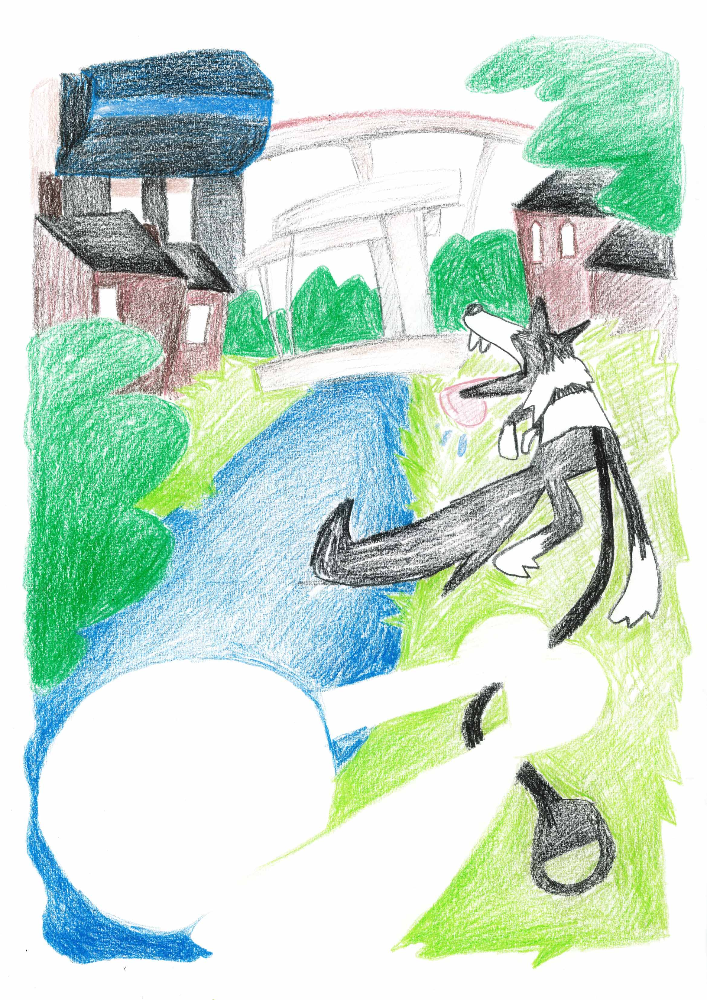

Actuellement étudiant en 3e année de DNMADE Graphisme, mention Image et Médiation, au Lycée Saint-Etienne à Cahors. Depuis trois ans, j'ai progressivement construit ma pratique autour de la recherche, adoptant une approche prospective et exploratoire. Mon travail se concentre sur la création de processus, avec une attention particulière portée à l’image en mouvement, que j’explore au travers de projets d’édition questionnant les méthodes d’impression.
Télécharger mon CV